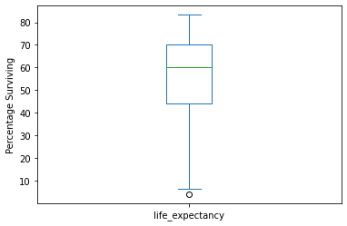
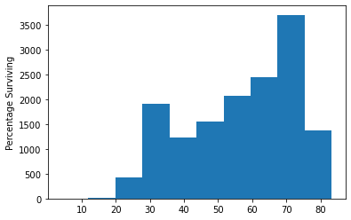
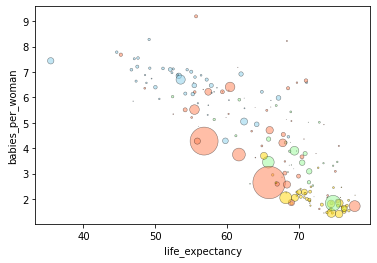
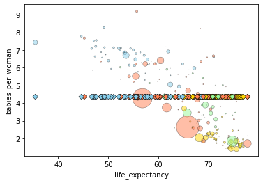
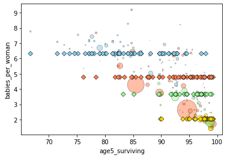
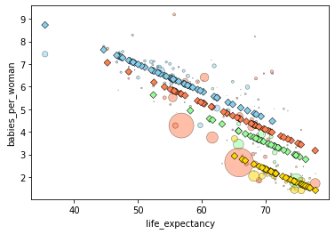

Statistics with Python#
Objectives#
Import data into a
pandasdata frameImport some standard and useful libraries for python
Introduce some model fitting
Reference and resources#
This lesson and data is adapted from LinkedIn Learning: Python Statistics Essential Training. See these lessons for more details including working with categorical data.
Importing libraries and data#
We will use several packages for our statistical analyses. In
particular, we will use scipy.stats and statsmodels for running
hypothesis testing and model fitting.
# Load standard libraries for data analysis
import numpy as np
import pandas as pd
import matplotlib
import matplotlib.pyplot as plt
# packages for statistics
import scipy.stats
import statsmodels
import statsmodels.api as sm
import statsmodels.formula.api as smf
%matplotlib inline
To find out more about a library and see the documentation, you can run
?LIBRARY_NAME.
?scipy.stats
Describe and plot distributions#
Let’s first import our GapMinder data set and summarize it.
# Import data
gapminder = pd.read_csv('../data/gapminder.csv')
gapminder.info()
<class 'pandas.core.frame.DataFrame'>
RangeIndex: 14740 entries, 0 to 14739
Data columns (total 9 columns):
# Column Non-Null Count Dtype
--- ------ -------------- -----
0 country 14740 non-null object
1 year 14740 non-null int64
2 region 14740 non-null object
3 population 14740 non-null float64
4 life_expectancy 14740 non-null float64
5 age5_surviving 14740 non-null float64
6 babies_per_woman 14740 non-null float64
7 gdp_per_capita 14740 non-null float64
8 gdp_per_day 14740 non-null float64
dtypes: float64(6), int64(1), object(2)
memory usage: 1.0+ MB
gapminder
country |
year |
region |
population |
life_expectancy |
age5_surviving |
babies_per_woman |
gdp_per_capita |
gdp_per_day |
|
|---|---|---|---|---|---|---|---|---|---|
0 |
Afghanistan |
1800 |
Asia |
3280000.0 |
28.21 |
53.142 |
7.0 |
603.0 |
1.650924 |
1 |
Afghanistan |
1810 |
Asia |
3280000.0 |
28.11 |
53.002 |
7.0 |
604.0 |
1.653662 |
2 |
Afghanistan |
1820 |
Asia |
3323519.0 |
28.01 |
52.862 |
7.0 |
604.0 |
1.653662 |
3 |
Afghanistan |
1830 |
Asia |
3448982.0 |
27.90 |
52.719 |
7.0 |
625.0 |
1.711157 |
4 |
Afghanistan |
1840 |
Asia |
3625022.0 |
27.80 |
52.576 |
7.0 |
647.0 |
1.771389 |
... |
... |
... |
... |
... |
... |
... |
... |
... |
... |
14735 |
Zimbabwe |
2011 |
Africa |
14255592.0 |
51.60 |
90.800 |
3.64 |
1626.0 |
4.451745 |
14736 |
Zimbabwe |
2012 |
Africa |
14565482.0 |
54.20 |
91.330 |
3.56 |
1750.0 |
4.791239 |
14737 |
Zimbabwe |
2013 |
Africa |
14898092.0 |
55.70 |
91.670 |
3.49 |
1773.0 |
4.854209 |
14738 |
Zimbabwe |
2014 |
Africa |
15245855.0 |
57.00 |
91.900 |
3.41 |
1773.0 |
4.854209 |
14739 |
Zimbabwe |
2015 |
Africa |
15602751.0 |
59.30 |
92.040 |
3.35 |
1801.0 |
4.930869 |
14740 rows × 9 columns
Descriptive statistics#
We can use built in functions in pandas to summarize key aspects of our data.
max_pop = gapminder.population.max()
ave_bpw = gapminder.babies_per_woman.mean()
var_bpw = gapminder.babies_per_woman.var()
print('Max population:', max_pop)
print('Mean babies per woman:', ave_bpw)
print('Variance in babies per woman:', var_bpw)
Max population: 1376048943.0
Mean babies per woman: 4.643471506105837
Variance in babies per woman: 3.9793570162855287
We examine quartiles using the .quantile() method and specifying
0.25, 0.50 and 0.75.
gapminder.life_expectancy.quantile([0.25,0.50,0.75])
0.25 44.23
0.50 60.08
0.75 70.38
Name: life_expectancy, dtype: float64
For very simple plots, we can plot directly from pandas, specifying the
type of plot with the argument kind. Here we make a box plot and a
histogram. We can then add labels with matplotlib.
gapminder.life_expectancy.plot(kind='box')
plt.ylabel('Percentage Surviving')
plt.show()

gapminder.age5_surviving.mean()
84.45266533242852
gapminder.life_expectancy.plot(kind='hist')
plt.ylabel('Percentage Surviving')
plt.show()

Hypothesis Testing#
Statistical methods are used to test hypotheses. One of the most foundational hypotheses we can ask is “Is the mean of this sample different from some value?” Typically, the value we are comparing the mean to has some sort of relavence.
While the actual mean of the sample might be different, we want to know if our data could have been generated if the true mean was a certain value. To do this, we use a 1-sample t-test.
To run a 1-sample t-test, we can use the ttest_1sample() function
from the scipy.stats module.
# 1 Sample t-test
# Is the mean of the data 84.4?
scipy.stats.ttest_1samp(gapminder['life_expectancy'], 57)
Ttest_1sampResult(statistic=-1.2660253842508842, pvalue=0.20552400415951508)
If we want to compare the means in two samples, we need to run a
2-sample t-test, also called an independent samples t-test. We
can use the function ttest_ind() for this.
# 2 sample t-test
gdata_us = gapminder[gapminder.country == 'United States']
gdata_canada = gapminder[gapminder.country == 'Canada']
scipy.stats.ttest_ind(gdata_us.life_expectancy, gdata_canada.life_expectancy)
Ttest_indResult(statistic=-0.741088317096773, pvalue=0.4597261729067277)
Fitting Models to Data#
We have described the sample of a population with statistics. Now let’s understand what we can say about a population from a sample of data.
# Get data subset
gdata = gapminder.query('year == 1985')
# grab population for point sizes
size = 1e-6 * gdata.population
# assign colors to regions
colors = gdata.region.map({'Africa': 'skyblue', 'Europe': 'gold', 'America': 'palegreen', 'Asia': 'coral'})
# create plotting function
def plotdata():
gdata.plot.scatter('life_expectancy','babies_per_woman',
c=colors,s=size,linewidths=0.5,edgecolor='k',alpha=0.5)
Using the custom function we just specified, let’s visualize the
relationship between age5_surviving and babies_per_woman.
plotdata()

We can see there seems to be some sort of negative relationship between
the two variables. There also might be a relationship between region and
babies_per_woman, as well.
statmodels#
statsmodels has many capabilities.
Here we will use Ordinary Least Squares (OLS). Least squares means models are fit by minimizing the squared difference between predictions and observations.
statsmodels lets us specify models using the “tilda” notation (also used in R) response variable ~ model terms.
For example: babes_per_woman ~ age5surviving.
Below we use the formula babies_per_woman ~ 1. This will essential
just use the mean babies_per_woman value as the prediction for all
data points.
# Ordinary least squares model
model = smf.ols(formula='babies_per_woman ~ 1',data=gdata)
# where babies per woman is the response variable and
# 1 represents a constant
# Next, we fit the model
grandmean = model.fit()
Let’s make a new function to visualize these results, using the old function we just made and adding in our predictions from our model on top.
# Let's make a function to plot the data against the model prediction
def plotfit(fit):
plotdata()
plt.scatter(gdata.life_expectancy, fit.predict(gdata),
c=colors,s=30,linewidths=0.5,edgecolor='k',marker='D')
plotfit(grandmean)

grandmean.params
Intercept 4.360714
dtype: float64
Ever single data points get predicted to have the same value: 4.36. Thus, this is a very poor model.
Let’s try a slightly better model, using the region to preduct babies
per woman. We use -1 in the formula to say we do not want to include
a constant in the model.
groupmeans = smf.ols(formula='babies_per_woman ~ -1 + region',data=gdata).fit()
plotfit(groupmeans)

We can check the parameters of our fitted model to see the main effect of each region.
groupmeans.params
region[Africa] 6.321321
region[America] 3.658182
region[Asia] 4.775577
region[Europe] 2.035682
dtype: float64
An ANOVA can be used to test if these effects are significant.
sm.stats.anova_lm(groupmeans)
df |
sum_sq |
mean_sq |
F |
PR(>F) |
|
|---|---|---|---|---|---|
region |
4.0 |
3927.702839 |
981.925710 |
655.512121 |
2.604302e-105 |
Residual |
178.0 |
266.635461 |
1.497952 |
NaN |
NaN |
This is a much more informed model, but we can still do a lot better.
Let’s take life_expectancy into account in a new model.
surviving = smf.ols(formula='babies_per_woman ~ -1 + region + life_expectancy',data=gdata).fit()
plotfit(surviving)
print(surviving.params)

region[Africa] 12.953805
region[America] 11.885657
region[Asia] 12.452629
region[Europe] 10.703060
life_expectancy -0.119281
dtype: float64
Now, we have a much better model.
statsmodels provides a summary for the fit with Goodness of Fit
statistics, and also provides an anova table for the significance of the
added variables.
surviving.summary()
Dep. Variable: |
babies_per_woman |
R-squared |
0.768 |
Model: |
OLS |
Adj. R-squared: |
0.763 |
Method: |
Least Squares |
F-statistic: |
146.9 |
Date: |
Tue, 08 Nov 2022 |
Prob (F-statistic): |
4.01e-55 |
Time: |
10:18:04 |
Log-Likelihood: |
-251.93 |
No. Observations: |
182 |
AIC: |
513.9 |
Df Residuals: |
177 |
BIC: |
529.9 |
Df Model: |
4 |
||
Covariance Type: |
nonrobust |
coef |
std err |
t |
P>|t| |
[0.025 |
0.975] |
|
|---|---|---|---|---|---|---|
region[Africa] |
12.9538 |
0.674 |
19.227 |
0.000 |
11.624 |
14.283 |
region[America] |
11.8857 |
0.836 |
14.209 |
0.000 |
10.235 |
13.536 |
region[Asia] |
12.4526 |
0.776 |
16.045 |
0.000 |
10.921 |
13.984 |
region[Europe] |
10.7031 |
0.875 |
12.229 |
0.000 |
8.976 |
12.430 |
life_expectancy |
-0.1193 |
0.012 |
-10.047 |
0.000 |
-0.143 |
-0.096 |
Omnibus: |
19.859 |
Durbin-Watson: |
1.967 |
Prob(Omnibus): |
0.000 |
Jarque-Bera (JB): |
37.777 |
Skew: |
0.529 |
Prob(JB): |
6.26e-09 |
Kurtosis: |
4.965 |
Cond. No. |
1.41e+03 |
Notes:[1] Standard Errors assume that the covariance matrix of the errors is correctly specified.[2] The condition number is large, 1.41e+03. This might indicate that there arestrong multicollinearity or other numerical problems.
We can also use the anova_lm() function with our model to estimate
the importance of factors in our model.